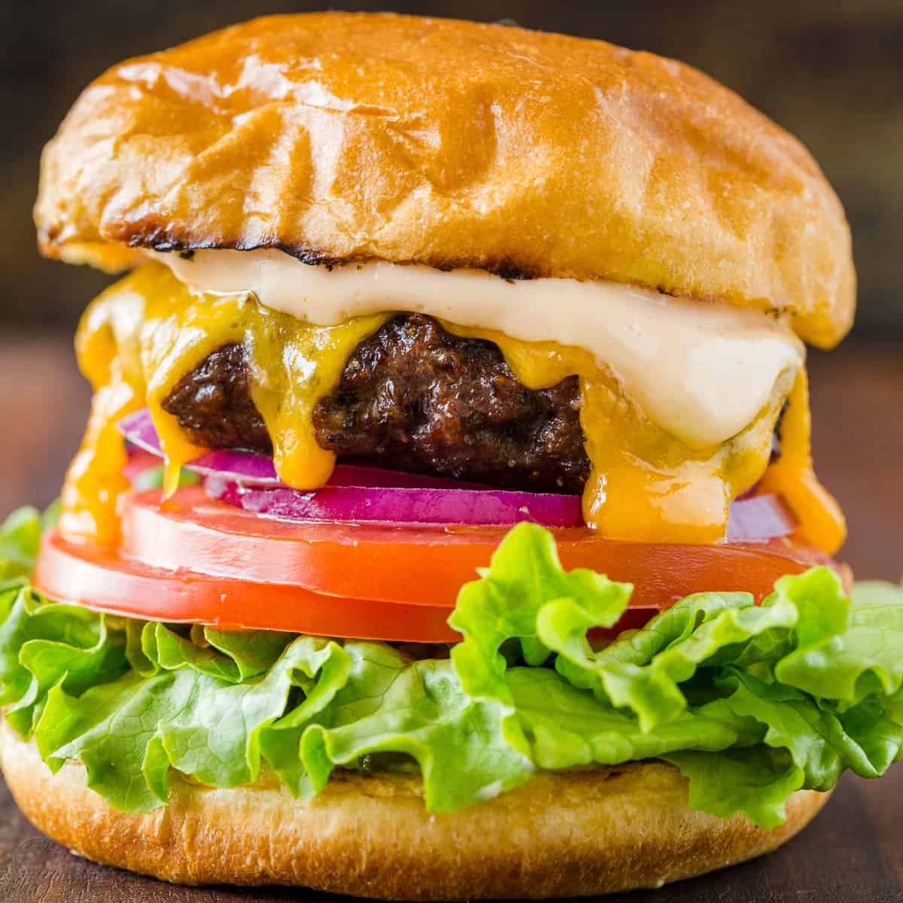

Pure Burger Perfection

When you're ready to start salivating, follow these handy dandy instructions OR... just visit Bobby's site, link below
With this recipe, you can go as little or as hard in the paint as you'd like.
Ingredients:
- 1 1/2 pounds ground chuck (80 percent lean) or ground turkey (90 percent lean)
- Kosher salt and freshly ground black pepper
- 1 1/2 tablespoons canola oil
- 4 slices cheese (optional)
- 4 hamburger buns, split; toasted, if desired
Preparation and Cooking Instructions:
- Divide the meat into 4 equal portions (about 6 ounces each). Form each portion loosely into a 3/4-inch-thick burger and make a deep depression in the center with your thumb.
Season both sides of each burger with salt and pepper.
- USING A GRILL: Heat a gas grill to high or heat coals in a charcoal grill until they glow bright orange and ash over.
Brush the burgers with the oil. Grill the burgers until golden brown and slightly charred on the first side, about 3 minutes for beef and 5 minutes for turkey.
Flip over the burgers. Cook beef burgers until golden brown and slightly charred on the second side, 4 minutes for medium rare (3 minutes if topping with cheese; see step 3) or until cooked to desired degree of doneness.
Cook turkey burgers until cooked throughout, about 5 minutes on the second side.
- USING A GRILL PAN: Heat a grill pan over high heat on top of the stove. Cook the burgers as for a grill, above.
- USING A SAUTE PAN OR GRIDDLE (PREFERABLY CAST IRON): Heat the oil in the pan or griddle over high heat until the oil begins to shimmer. Cook the burgers until golden brown and slightly charred on the first side, about 3 minutes for beef and 5 minutes for turkey.
Flip over the burgers. Cook beef burgers until golden brown and slightly charred on the second side, 4 minutes for medium rare (3 minutes if topping with cheese) or until cooked to desired degree of doneness. Cook turkey burgers until cooked throughout, about 5 minutes on the second side.
- Add the cheese, if using, to the tops of the burgers during the last minute of cooking and top with a basting cover, close the grill cover, or tent the burgers with aluminum foil to melt the cheese.
- Sandwich the hot burgers between the buns and serve immediately.
Straight from the Source